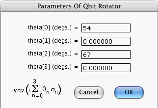

This window opens if you press the Generate Amplitudes... button of the Node Prior-Info. window when its focus node is a valid Qbit Rotator. The window allows you to enter the angles theta[0], theta[1], theta[2] and theta[3] (in degrees) such that the amplitudes of the node are given by the entries of the following 2 × 2 matrix:
exp(i*(pi/180)*{theta[0] + theta[1]*sigmaX + theta[2]*sigmaY + theta[3]*sigmaY}),
where sigmaX, sigmaY and sigmaZ are the Pauli Matrices.
Even if the focus node is a Qbit Rotator, when you press the Generate Amplitudes... button, the computer will refuse to open the above window unless:
Quantum Fog gives names 0 and 1 to the states of the Qbit Rotator.
More information about Qbit Rotators can be found in the document entitled "Quantum Fog Library Of Essays" that accompanies this manual.